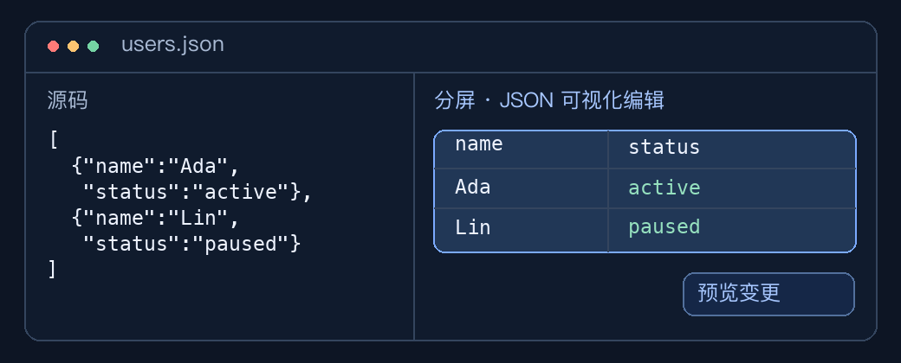

Plugin development
Developer preview. The current Mac App Store release (1.0.3) does not support plugin imports. To try the examples, use a build with the Plugin Center.
Illustrated plugin examples (Chinese)
See inline actions, a timestamp inspection card, and an editable JSON table in split view. The guide maps editor regions to plugin contribution points.

JavaScript plugin guide (Chinese)
Build a text action, then explore commands, tool panels, editor APIs, permissions, debugging, and packaging.
Declarative extension guide (Chinese)
Add languages, syntax highlighting, themes, and keybindings through a manifest.